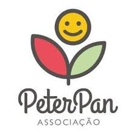

A Associação Peter Pan (APP) nasceu da vontade de amar e de tornar melhor a vida de crianças e adolescentes com câncer. Criada em 1996, a instituição vem transformando o cenário do câncer infantojuvenil no estado do Ceará em 29 anos de história.
Essas realizações só são possíveis graças à ajuda e confiança dos nossos doadores, empresas amigas, voluntários e poder público. Sem eles, proporcionar um tratamento humanizado às nossas crianças e adolescentes, se tornaria uma tarefa muito mais difícil.
Já foi comprovado cientificamente que a humanização durante um tratamento médico contribui no processo de cura do paciente. O amor também é remédio.
